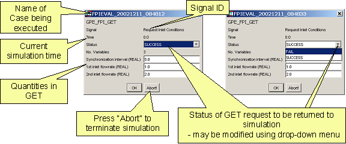
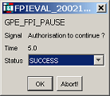
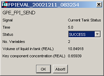
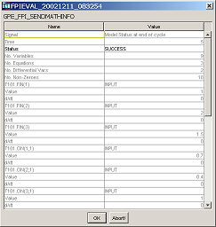
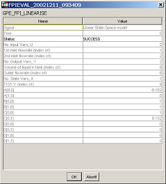

All eventFPI dialogs include:
the SIGNAL ID identifying the elementary task being executed;
the simulation time at which the interaction occurs;
the value of the status of the execution of this elementary task;
For GET, SEND and PAUSE elementary tasks, the status is always indicated as SUCCESS on entry. The user may change it to FAIL via the drop-down menu provided. It should be noted that this simply sets the value of the STATUS logical flag associated with this elementary task (e.g. StatFlag in the first figure below) to FALSE; however, it does not automatically stop the simulation. It is up to the model developer to intercept this flag and take appropriate action in the simulation SCHEDULE.
For SENDMATHINFO and LINEARISE tasks, the status has an appropriate value on entry indicating the status of the execution of this task1E.g., in the case of LINEARISE, a failure that has occurred in constructing the linearised state-space model.. If this value is anything other than SUCCESS when the user presses the OK button, the simulation will terminate immediately.
an OK button that allows the simulation to continue, subject to the value of the status (see above);
an ABORT button that terminates the simulation immediately.
GET SIGNALID "Request Inlet Conditions" STATUS StatFlag ; SimInterval := "Synchronisation interval" ; Tank.Fin(1) := "1st inlet flowrate" ; Tank.Fin(2) := "2nd inlet flowrate" ; END (a) gPROMS language |
 (b) Interaction dialog |
PAUSE SIGNALID "Authorisation to continue?" STATUS StatFlag (a) gPROMS language |  (b) Interaction dialog |
SEND SIGNALID "Current Tank Status" STATUS StatFlag "Volume of liquid in tank" := Tank.V ; "Key component concentration" := Tank.C(1) ; END (a) gPROMS language |  (b) Interaction dialog |
SENDMATHINFO SIGNALID "Model status at end of cycle" STATUS StatFlag (a) gPROMS language |  (b) Interaction dialog |
LINEARISE SIGNALID "Linear State-Space model" INPUT "1st inlet flowrate" := Tank.Fin(1) ; "2nd inlet flowrate" := Tank.Fin(2) ; OUTPUT "Volume of liquid in tank" := Tank.V ; "Outlet flowrate" := Tank.F ; END (a) gPROMS language |  (b) Interaction dialog |